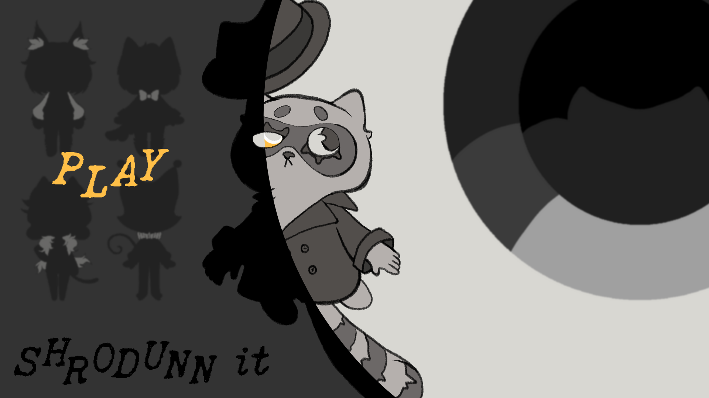

Games & Projects
A showcase of my work in game development, including prototypes and completed projects.
Cafe Sim Prototype
A Unity prototype for a cafe simulation game, still in development. The prototype features basic mechanics - an ordering system, resetting on player errors, and a basic patience system.
Skills and Tools
- C#
- Scriptable Objects

Schrodunnit
A group developed Unity project that aimed to create a comic exploring the idea of Schrodinger's Cat. I wrote the script and implemented the dialogue system using the Ink plugin.
Skills and Tools
- C#
- Ink
Fruits for Harvest
A simple Unity 2D platformer and the first game I made solo. While it's simple in concept, I learned a lot of C# and Unity coding principles from it.
Skills and Tools
- C#
- Asesprite
Ghost Hunting
A solo Unreal Engine game that featured a third-person perspective and basic AI. The player must use traps to immobilize the ghost to capture it.
Skills and Tools
- Unreal Engine
- Blueprint Scripting
Mobile Data Narrative Site
An HTML site I designed to explore the playing habits of Animal Crossing players. I used HTML, CSS, JavaScript, D3.js, and React.js to create a responsive site that displays the data in an interactive way.
Skills and Tools
- HTML
- CSS
- Javascript
- React.js
- D3.js

Fungle Bungle: Home Alone
A group developed Unity 2D platformer that used AR recognition to load the game on a plane surface and read a physical card to alter the game state. I implemented the AR plane recognition and edited the Android XML files to enable cross-device compatability.
Skills and Tools
- AR Foundations
- Android XML Editing
- C#